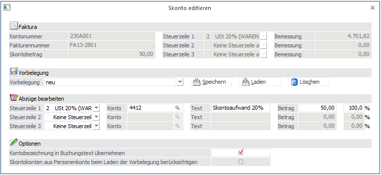
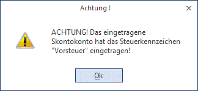
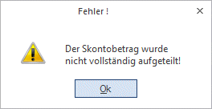
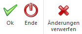

Wenn beim Buchen einer Zahlung (über die Buchungsprogramm "Buchen (Dialog Stapel)", " Buchen (Dialog Stapel) Quick" oder "Buchen Zahlungsmittelkonten") ein automatischer Skontobetrag vorgeschlagen wird oder wenn der Skontobetrag manuell verändert wurde, dann können über den Button "Skonto editieren ()" bzw. durch Drücken der Tastenkombination ALT + D diverse Einstellungen für die Skontobuchung durchgeführt werden:

Faktura
Im oberen Bereich des Fensters werden die aktuellen Informationen der Faktura angezeigt, wie die Kontonummer, die Fakturennummer der aktuell ausgewählte Skontobetrag und die Bemessungsgrundlagen und die Steuerzeilen, die beim Einbuchen der Faktura vergeben wurden.
Vorbelegung
Im Bereich Vorbelegung können diverse Einstellungen in diesem Fenster abgespeichert werden, so dass in weiterer Folge gewisse Voreinstellungen übernommen werden können. Dazu wird im Feld
Ø Vorbelegung
Eine gewünschte Bezeichnung für die Voreinstellungen gewählt. Durch Bestätigen des Feldes werden die Buttons "Speichern", "Laden" und "Löschen" freigeschalten.
Mit dem Speichern-Button können neue Vorbelegungen abgespeichert werden.
Mit dem Laden-Button können bereits vorhandene Vorbelegungen übernommen werden.
Mit dem Löschen-Button können bereits vorhandene Vorbelegungen wieder entfernt werden.
Die Vorbelegung wird pro Buchungsschlüssel (DZ / KZ) gespeichert und kann in weiterer Folge bei Buchungsarten mit den Buchungsschlüsseln DZ bzw. KZ hinterlegt werden.
Ø Abzüge bearbeiten
In diesem Bereich können die Angaben für die Skontobuchung bearbeitet werden, wobei folgende Felder - jeweils für max. 3 Steuerzeilen - zur Verfügung stehen:
Ø Steuerzeile
Hier wird die Steuerzeile eingetragen, die für die Skontobuchung verwendet werden soll. Standardmäßig wird die Steuerzeile vorgeschlagen, mit der auch die Faktura eingebucht wurde. Aus der Auswahllistbox kann eine beliebige Steuerzeile ausgewählt werden.
Ø Konto
In diesem Feld wird das Skontokonto vorgeschlagen, wobei das Skontokonto im ersten Schritt aus der Steuerzeile verwendet wird. Ist im Personenkonto, für das die Zahlung gebucht wird, ein Skontokonto hinterlegt, wird dieses Konto verwendet (abhängig von der Steuerzeile).
Wird bei einer DZ-Buchung ein Skontokonto mit Vorsteuer-Schlüsselung angegeben, so erfolgt eine Hinweismeldung. Das Konto kann trotzdem verwendet werden. Bei einer KZ-Buchung kann ebenso ein Skontokonto mit Umsatzsteuer-Schlüsselung verwendet werden.

Ø Text
Im Feld Text kann der Buchungstext eingegeben werden, der für die Buchung des Skontos verwendet werden soll. Standardmäßig wird der Text "Skonto" vorgeschlagen.
Ø Betrag
In diesem Feld wird der Skontobetrag ausgewiesen, der bei Bedarf auch noch geändert werden kann. In Summe aller 3 Zeilen muss aber der Skonto aufgeteilt werden, der im Informationsteil unter "Skontobetrag" ausgewiesen steht. Durch Drücken der F3-Taste kann der Differenzbetrag (sofern noch ein Betrag offen ist) übernommen werden.
Ø %
Hier wird der Prozentsatz angezeigt, der das Skonto der Zeile zum gesamten "Skontobetrag" ergibt. Es kann auch der Prozentsatz eingegeben werden, anhand dessen dann der Skontobetrag ermittelt wird. In Summe müssen die 3 Skontoprozentsätze wieder 100 % ergeben. Durch Drücken der F3-Taste kann der Differenzprozentsatz (sofern noch ein Wert offen ist) übernommen werden.
Ist die Summe der Zeilen nicht 100% bzw. der Betrag nicht komplett aufgeteilt, so erfolgt eine Hinweismeldung:

Die Felder Konto, Text, Betrag und % können ab der 2. Zeile nur dann bearbeitet werden, wenn eine Steuerzeile eingetragen wurden.
Optionen
Ø Kontobezeichnung in Buchungstext übernehmen
Wenn diese Option aktiviert ist, dann wird die Kontobezeichnung des Skontokontos als Buchungstext vorgeschlagen. Diese Option wird benutzerabhängig gespeichert.
Ø Skontokonten aus Personenkonto beim Laden der Vorbelegung berücksichtigen
Diese Option kann nur dann aktiviert werden, wenn mit einer Vorbelegung gearbeitet wird. In diesem Fall werden dann - sofern vorhanden - die in der Vorbelegung hinterlegten Skontokonten durch das Skontokonto aus dem Personenkontenstamm "überschrieben".
Buttons

Ø OK
Durch Anklicken des OK-Buttons bzw. durch Drücken der F5-Taste werden alle Änderungen gespeichert und das Programm kehrt in die Zahlungstabelle zurück.
Ø Ende
Durch Drücken der ESC-Taste wird das Fenster geschlossen. Alle vorgenommenen Änderungen gehen verloren.
Ø Änderungen verwerfen
Wenn der Button "Änderungen verwerfen" angeklickt wird, dann werden die Skontoeinstellungen auf die ursprünglichen Werte zurückgesetzt (als wäre das Fenster noch nie bearbeitet worden).
Hinweis
Wenn die Skontoeinstellungen verändert wurden und dann zu einem späteren Zeitpunkt der Skontobetrag in der Zahlungstabelle verändert wird (ohne, dass das Skonto editieren nochmals aufgerufen wird), dann wird der Skontobetrag anteilsmäßig auf die Steuerzeilen aufgeteilt.